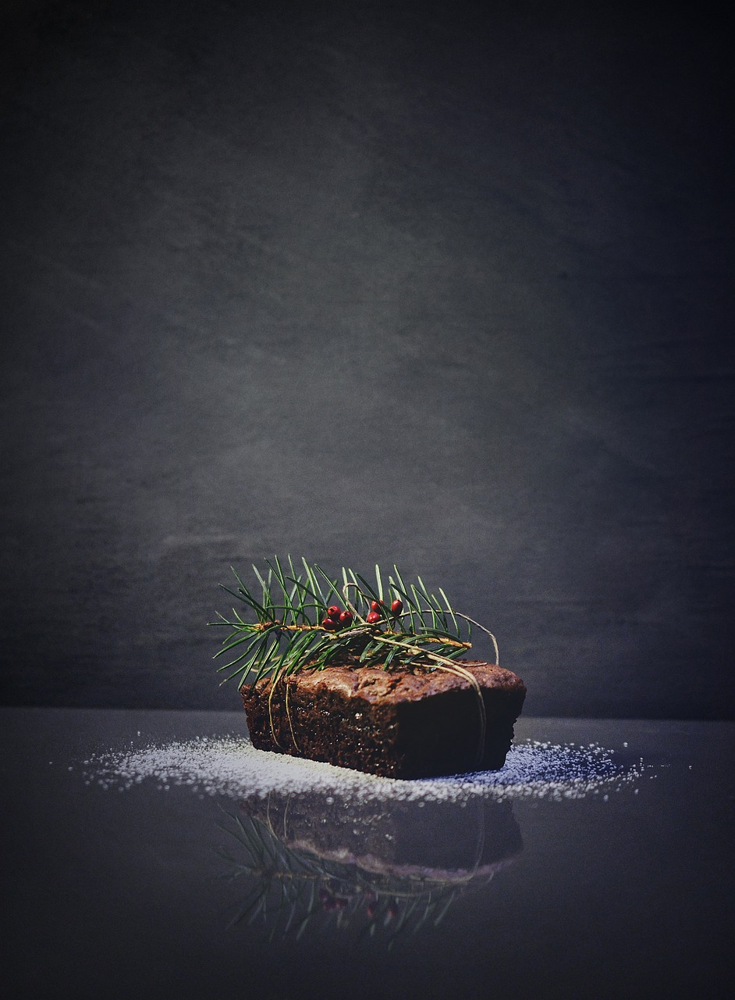
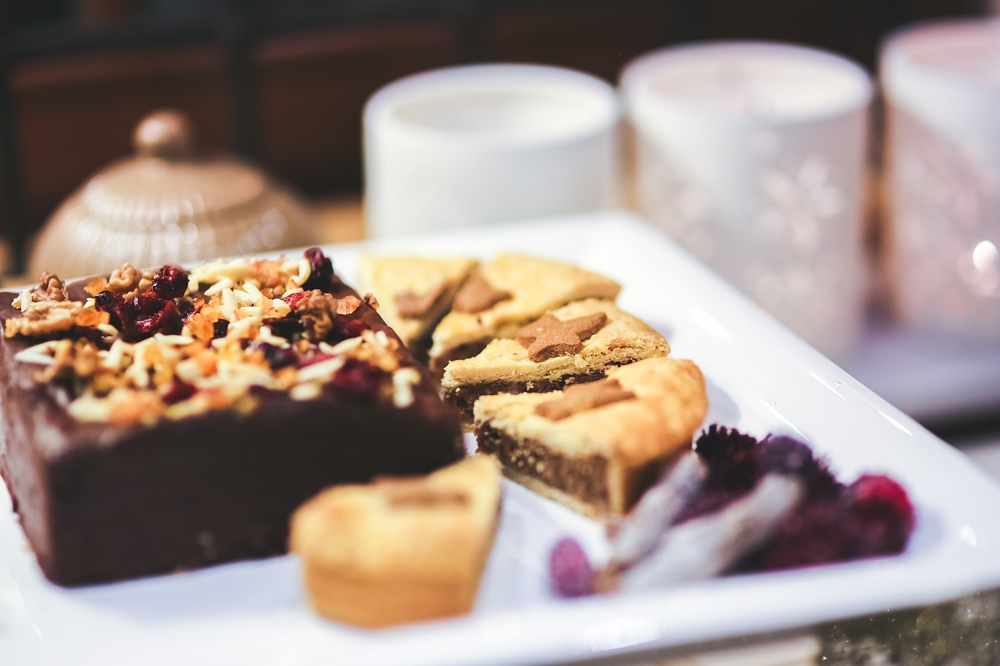
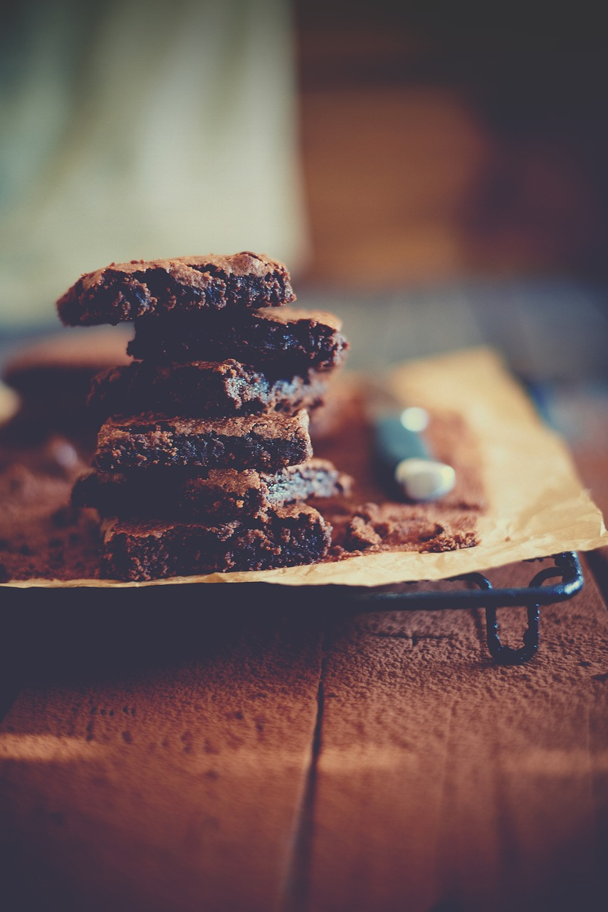

From Scratch Fudge Brownies
I mean it's brownies, and not from a premix, what else is there to say?

Ingredients
- 1/3 c Dutch processed cocoa
- 1 1/2 tsp instant espresso powder
- 1/2 c plus 2 tbsp boiling water
- 2 oz unsweetened chocolate baking bar, chopped fine
- 1/2 c plus 2 tbsp vegetable oil
- 4 tbsp butter, melted
- 2 large eggs
- 2 large egg yolks
- 2 tsp madagascar vanilla extract
- 2 1/2 c white sugar
- 1 3/4 c all purpose flour
- 3/4 tsp kosher salt
- 6 oz chocolate chips

Instructions
- Place rack in middle of over and pre-heat to 350 deg. Line a 9x13 baking pan, grease lining and set aside.
- Whisk cocoa, espresso powder, and boiling water until smooth. Add unsweetened chocolate and whisk till melted in. Whisk in oil and melted butter.
- Add eggs, yolks, and vanilla then whisk till smooth. Whisk in sugar until fully incorporated. Sprinkle salt and flour into batter and fold in with a spatula until jus combined. Do not overmix. Finally fold in chocolate chips.
- Transfer batter to baking pan and spread evenly. Bake for 35-40 min and check for doneness.
- Transfer pan ti wire rack to cool then transfer to wire rack to cool completely before cutting into squares.
Note: Brownies are done when a toothpick inserted into the middle comes out with moist crumbs on it not batter. You can finish the brownies with powdered sugar dusting or icing.
